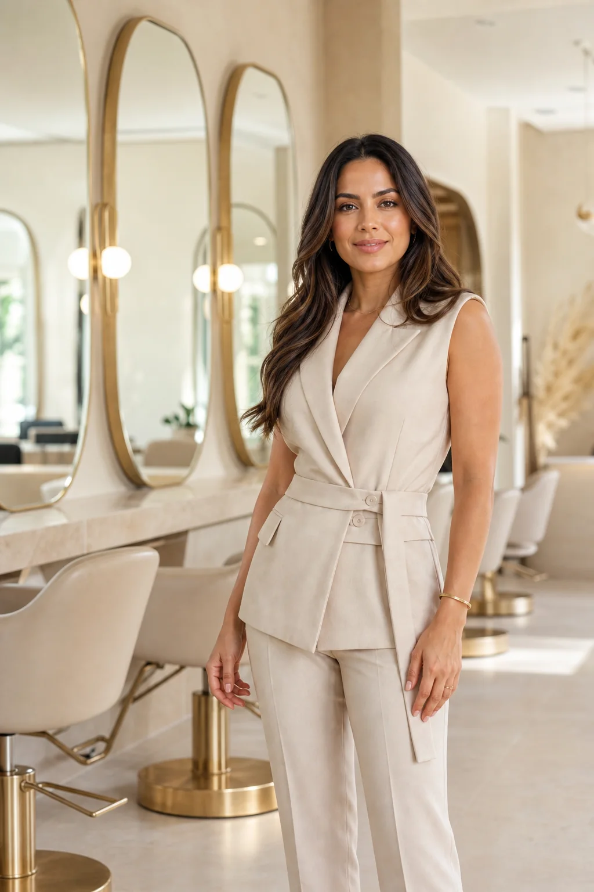

Diagnóstico
Pele, fio, rotina e desejo.

Coloração personalizada para iluminar seus traços, respeitar seus fios e traduzir quem você é.
CONHECER O MÉTODOPele, fio, rotina e desejo.
Uma fórmula exclusiva para você.
Beleza que continua bonita.